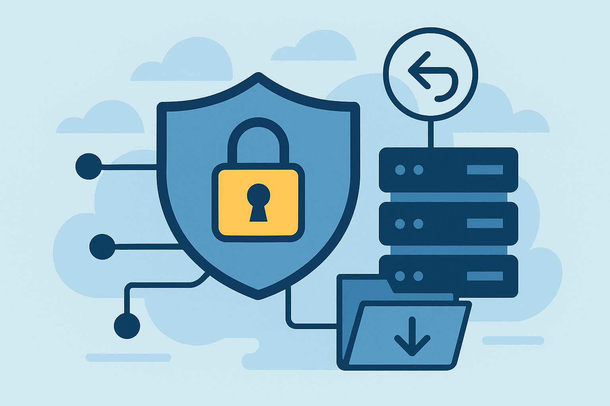

Introduction
This guide walks you through installing Kubuntu on your laptop, adding Docker, and deploying a fully‑featured media server stack—including Plex, Sonarr, Radarr, Lidarr, Prowlarr and Overseerr—inside containers. New users will find step‑by‑step instructions with commands to copy and paste and explanations along the way.
Installing Kubuntu
Download the ISO
Navigate to the official Kubuntu download page and choose your preferred version. The latest release (as of September 2025) is Kubuntu 25.04, supported until January 2026, and the long‑term support release is Kubuntu 24.04.3 LTS, supported until April 2027. Click the download link for your chosen version.
Verify the checksum
After downloading the ISO, verify its integrity using the SHA‑256 checksum. On Linux you can run:
cd ~/Downloads
sha256sum kubuntu-24.04-desktop-amd64.iso
Compare the output with the official checksum posted on the Kubuntu site. Verifying the checksum ensures the ISO was downloaded correctly.
Create bootable installation media
Use a tool like Balena Etcher to flash the ISO to a USB drive. In Etcher:
- Select the Kubuntu ISO file.
- Select your USB drive.
- Click Flash! to create the bootable media.
On Linux you can also run Etcher as an AppImage by extracting the downloaded archive and executing the .AppImage file.
Boot and install
Insert the USB drive and reboot the computer. Enter the boot menu (often by pressing F12, Esc or another key) and choose the USB device. When the installer appears you can try the live environment or start installation. The installer guides you through:
- Preparation – connect to the Internet and optionally enable updates and third‑party software.
- Disk setup – choose automatic partitioning or manual partitioning if you need custom layouts.
- Timezone and keyboard – select your region (America/Denver) and preferred keyboard layout.
- User information – choose a username, computer name and password.
After the installation completes, restart and remove the USB drive.
Installing Docker
Docker provides a lightweight way to run applications in isolated containers. The recommended method is to install Docker Engine from the official package repository.
Set up the Docker repository
Open a terminal and run the following commands to add Docker’s GPG key and repository. Replace $(. /etc/os-release && echo "${UBUNTU_CODENAME:-$VERSION_CODENAME}") with your release codename (for Kubuntu 24.04 the codename is noble):
sudo apt-get update
sudo apt-get install ca-certificates curl
sudo install -m 0755 -d /etc/apt/keyrings
curl -fsSL https://download.docker.com/linux/ubuntu/gpg | \
sudo tee /etc/apt/keyrings/docker.asc > /dev/null
sudo chmod a+r /etc/apt/keyrings/docker.asc
echo \
"deb [arch=$(dpkg --print-architecture) signed-by=/etc/apt/keyrings/docker.asc] \
https://download.docker.com/linux/ubuntu \n $(. /etc/os-release && echo "${UBUNTU_CODENAME:-$VERSION_CODENAME}") stable" | \
sudo tee /etc/apt/sources.list.d/docker.list > /dev/null
sudo apt-get update
This procedure imports Docker’s signing key and adds the stable repository.
Install Docker packages
To install the latest Docker Engine and Docker Compose plugin, run:
sudo apt-get install docker-ce docker-ce-cli containerd.io docker-buildx-plugin docker-compose-plugin
After installation, verify everything is working by running the hello‑world container:
sudo docker run hello-world
This will download a test image and print a confirmation message.
Running Docker without sudo
By default Docker commands require root privileges. To run Docker as your regular user, create a docker group and add yourself to it:
sudo groupadd docker
sudo usermod -aG docker $USER
newgrp docker
After logging out and back in (or running newgrp docker), you should be able to execute Docker commands without sudo. This process modifies permissions for the Docker socket.

Understanding Mounts & Permissions
Before diving into each media application, it's important to understand how Docker stores data and how file permissions impact your containers. Docker supports two primary types of persistent storage: volumes and bind mounts.
Volumes vs bind mounts
When you mount a volume into a container, Docker creates a directory within its storage area and manages that directory for you. This is similar to bind mounts but the volume is isolated from the host's core filesystem. Volumes are easier to back up or migrate and can be safely shared among multiple containers. Bind mounts map a specific file or directory from the host into the container. They are ideal for sharing source code or configuration files, but they have direct write access to the host filesystem. Processes inside the container run as root by default, so a bind mount could inadvertently modify or delete host files. Use the readonly (:ro) option to make a bind mount read‑only, or prefer volumes when you do not need direct host access.
PUID, PGID & umask
The LinuxServer.io containers used in this guide run processes as the root user by default. They offer environment variables PUID (user ID) and PGID (group ID) so that files created inside the container are owned by a specific user on the host. To find your IDs, run id your_user; typical non‑root accounts have uid=1000 and gid=1000. Set these values in your docker‑compose.yml to avoid permission issues.
Many LinuxServer images also support an optional UMASK variable to control default file permissions. Umask values subtract permissions from a base of 777 for directories and 666 for files. For example, the default umask of 002 for non‑root users results in directory permissions of 775 and file permissions of 664, while the root default of 022 yields 755 and 644. If you want new files to be group‑writable (e.g., 775), set UMASK=002 in the container’s environment.
Preparing host directories
Create directories on the host for your configuration and media data, then ensure they are owned by the same user and group specified by PUID and PGID to prevent permission errors. For example:
sudo mkdir -p /opt/stacks/sonarr /mnt/media/tv /mnt/media/downloadsAfter creating the directories, adjust ownership by running sudo chown -R <UID>:<GID> /opt/stacks/sonarr /mnt/media/tv /mnt/media/downloads with your actual UID and GID.
If using bind mounts, append :ro to mount paths to make them read‑only in the container, protecting host files from modifications.
Installing Plex Media Server
Plex organizes and streams your personal media collection. Running Plex inside a Docker container keeps it isolated and easy to update.
Prepare directories and user IDs
Plex needs a place to store its configuration and a path to your media files. First determine your user ID and group ID:
id -u # shows your UID (e.g. 1000)
id -g # shows your GID (e.g. 1000)
Create directories for Plex and your media. This example uses /opt/stacks/plex to store the compose file and configuration:
sudo mkdir -p /opt/stacks/plex
cd /opt/stacks/plex
Next, obtain a Plex claim token. Visit plex.tv/claim, sign in and copy the short code. The token expires after a few minutes.
Create a docker‑compose file
Create compose.yml in /opt/stacks/plex and paste the following, replacing:
<USERID>and<GROUPID>with the numbers returned byid<TIMEZONE>with your timezone (e.g.,America/Denver)<CLAIM>with your Plex claim code/path/to/mediawith the directory containing your movies, TV shows or music
services:
plex:
container_name: plex
image: plexinc/pms-docker
restart: unless-stopped
environment:
- PLEX_UID=<USERID>
- PLEX_GID=<GROUPID>
- TZ=<TIMEZONE>
- PLEX_CLAIM=<CLAIM>
network_mode: host
volumes:
- ./config:/config
- ./transcode:/transcode
- /path/to/media:/data
devices:
- /dev/dri:/dev/dri
This compose configuration follows the LinuxServer.io recommendations for Plex: it mounts a config directory, a transcode directory and your media directory, sets the container to restart automatically, and runs in host network mode.
Start Plex
From the directory containing compose.yml, run:
docker compose up -d
Docker will download the Plex image and start the container. Once running, open a browser and navigate to:
http://localhost:32400/web
The Plex setup wizard will prompt you to sign in, name your server and add media libraries. Follow the on‑screen instructions to finish setup.
Hardware Transcoding (optional)
If your CPU or GPU supports hardware video acceleration, Plex can leverage it to transcode streams more efficiently. LinuxServer’s Plex image automatically grants the container user permission to access the GPU when you mount the /dev/dri device. To enable hardware acceleration on Intel/AMD GPUs, add the following to your service definition:
devices:
- /dev/dri:/dev/dri
Mounting /dev/dri exposes the host’s video device inside the container, allowing Plex to use Intel QuickSync or VAAPI. LinuxServer notes that you simply need to pass --device=/dev/dri:/dev/dri and the container will handle permissions. NVIDIA GPUs require the Nvidia Container Toolkit and the NVIDIA_VISIBLE_DEVICES variable.

Configuring Sonarr, Radarr, Lidarr & Prowlarr
The Servarr family of applications automates media acquisition. They monitor RSS feeds and manage downloads through BitTorrent or Usenet clients. Each application runs well inside a container.
Common environment variables
All LinuxServer.io containers support specifying the user and group IDs via PUID and PGID environment variables and setting your timezone via TZ. Defining these variables prevents permission issues when accessing host volumes. You can find your IDs using id your_user.
Sonarr (TV series)
Sonarr runs a web interface on port 8989. A typical docker-compose service looks like:
sonarr:
container_name: sonarr
image: lscr.io/linuxserver/sonarr:latest
environment:
- PUID=<USERID>
- PGID=<GROUPID>
- TZ=<TIMEZONE>
volumes:
- /opt/stacks/sonarr/config:/config
- /mnt/media/tv:/tv
- /mnt/media/downloads:/downloads
ports:
- "8989:8989"
restart: unless-stopped
After starting the container, access Sonarr at http://<server-ip>:8989.
Radarr (Movies)
Radarr uses port 7878. Example service:
radarr:
container_name: radarr
image: lscr.io/linuxserver/radarr:latest
environment:
- PUID=<USERID>
- PGID=<GROUPID>
- TZ=<TIMEZONE>
volumes:
- /opt/stacks/radarr/config:/config
- /mnt/media/movies:/movies
- /mnt/media/downloads:/downloads
ports:
- "7878:7878"
restart: unless-stopped
Open http://<server-ip>:7878 to configure Radarr.
Lidarr (Music)
Lidarr manages music libraries and listens on port 8686. The container requires volumes for its config, music library and download directory:
lidarr:
container_name: lidarr
image: lscr.io/linuxserver/lidarr:latest
environment:
- PUID=<USERID>
- PGID=<GROUPID>
- TZ=<TIMEZONE>
volumes:
- /opt/stacks/lidarr/config:/config
- /mnt/media/music:/music
- /mnt/media/downloads:/downloads
ports:
- "8686:8686"
restart: unless-stopped
Open http://<server-ip>:8686 to access Lidarr.
Prowlarr (Indexer manager)
Prowlarr centralizes indexer configuration and sits behind your Arr apps. It runs on port 9696:
prowlarr:
container_name: prowlarr
image: lscr.io/linuxserver/prowlarr:latest
environment:
- PUID=<USERID>
- PGID=<GROUPID>
- TZ=<TIMEZONE>
volumes:
- /opt/stacks/prowlarr/config:/config
ports:
- "9696:9696"
restart: unless-stopped
Visit http://<server-ip>:9696 to add your preferred torrent/Usenet indexers. After configuring Prowlarr, point Sonarr, Radarr and Lidarr at Prowlarr rather than adding individual indexers.
Overseerr
Overseerr provides a user‑friendly request management system for Plex. It allows your household or friends to request movies and shows. According to the LinuxServer.io image documentation, Overseerr supports the same PUID, PGID and TZ variables.
overseerr:
container_name: overseerr
image: lscr.io/linuxserver/overseerr:latest
environment:
- PUID=<USERID>
- PGID=<GROUPID>
- TZ=<TIMEZONE>
volumes:
- /opt/stacks/overseerr/config:/config
ports:
- "5055:5055"
restart: unless-stopped
Once started, access Overseerr at http://<server-ip>:5055. In the initial setup wizard, connect it to your Plex server and configure user authentication. Overseerr uses your Plex account to authenticate users and can forward approved requests to Sonarr or Radarr automatically.
Putting it all together
You can combine all services into a single docker-compose.yml file. Organizing your media directories and config paths up front makes the stack manageable. Here’s an example (replace paths, IDs and timezones as before):
version: "3.8"
services:
plex:
container_name: plex
image: plexinc/pms-docker
network_mode: host
environment:
- PLEX_UID=<UID>
- PLEX_GID=<GID>
- TZ=America/Denver
- PLEX_CLAIM=<CLAIM>
volumes:
- /opt/stacks/plex/config:/config
- /opt/stacks/plex/transcode:/transcode
- /mnt/media:/data
devices:
- /dev/dri:/dev/dri
restart: unless-stopped
sonarr:
container_name: sonarr
image: lscr.io/linuxserver/sonarr:latest
ports:
- "8989:8989"
environment:
- PUID=<UID>
- PGID=<GID>
- TZ=America/Denver
volumes:
- /opt/stacks/sonarr/config:/config
- /mnt/media/tv:/tv
- /mnt/media/downloads:/downloads
restart: unless-stopped
radarr:
container_name: radarr
image: lscr.io/linuxserver/radarr:latest
ports:
- "7878:7878"
environment:
- PUID=<UID>
- PGID=<GID>
- TZ=America/Denver
volumes:
- /opt/stacks/radarr/config:/config
- /mnt/media/movies:/movies
- /mnt/media/downloads:/downloads
restart: unless-stopped
lidarr:
container_name: lidarr
image: lscr.io/linuxserver/lidarr:latest
ports:
- "8686:8686"
environment:
- PUID=<UID>
- PGID=<GID>
- TZ=America/Denver
volumes:
- /opt/stacks/lidarr/config:/config
- /mnt/media/music:/music
- /mnt/media/downloads:/downloads
restart: unless-stopped
prowlarr:
container_name: prowlarr
image: lscr.io/linuxserver/prowlarr:latest
ports:
- "9696:9696"
environment:
- PUID=<UID>
- PGID=<GID>
- TZ=America/Denver
volumes:
- /opt/stacks/prowlarr/config:/config
restart: unless-stopped
overseerr:
container_name: overseerr
image: lscr.io/linuxserver/overseerr:latest
ports:
- "5055:5055"
environment:
- PUID=<UID>
- PGID=<GID>
- TZ=America/Denver
volumes:
- /opt/stacks/overseerr/config:/config
restart: unless-stopped
Save this file and start all containers at once with:
docker compose up -d
Docker will pull each image, create containers, and set up volumes and ports. After a few minutes, your media stack will be available across different ports on your Kubuntu machine.
Security & Exposure
Running these services on your home network is convenient, but exposing their web interfaces directly to the Internet can be risky. A reverse proxy such as LinuxServer’s SWAG, Nginx Proxy Manager, Traefik or Caddy sits in front of your containers, terminates TLS and centralises authentication. Instead of opening many random ports, you forward only port 443 (HTTPS) to the proxy, which then routes traffic to the right container.
Using a reverse proxy has several advantages: you no longer need to remember port numbers for each app, you get free TLS certificates via Let’s Encrypt, and you can configure a single sign‑on or password prompt for all services. Opening just one port reduces your attack surface and simplifies firewall rules. LinuxServer’s reverse‑proxy guide notes that it also provides sample configurations for Plex and the Servarr suite.
If you choose to make services available remotely, consider combining a reverse proxy with a VPN such as WireGuard or Tailscale for extra protection. A VPN creates an encrypted tunnel between your client and server so that your media stack is never directly exposed to the public Internet. Always use strong passwords and keep your containers up to date.
Adding a Download Client
The Servarr applications hand off downloads to a BitTorrent or Usenet client. Two popular options are qBittorrent (torrent) and SABnzbd (Usenet). Both have official LinuxServer images that support PUID, PGID and TZ environment variables. They also expose their web interfaces on port 8080 by default.
qBittorrent
The qBittorrent container exposes a WebUI and torrenting port. A minimal service definition looks like this:
qbittorrent:
container_name: qbittorrent
image: lscr.io/linuxserver/qbittorrent:latest
environment:
- PUID=<UID>
- PGID=<GID>
- TZ=America/Denver
- WEBUI_PORT=8080
- TORRENTING_PORT=6881
volumes:
- /opt/stacks/qbittorrent/config:/config
- /mnt/media/downloads:/downloads
ports:
- "8080:8080"
- "6881:6881"
- "6881:6881/udp"
restart: unless-stopped
After starting the container, access the Web UI at http://<server-ip>:8080. The default login is username admin and password adminadmin; you should change these immediately. Set the Downloads directory in qBittorrent to the same path used in your Servarr configuration.
SABnzbd
SABnzbd is a web‑based Usenet downloader. Its service definition is similar: specify your user IDs and mount config and download directories:
sabnzbd:
container_name: sabnzbd
image: lscr.io/linuxserver/sabnzbd:latest
environment:
- PUID=<UID>
- PGID=<GID>
- TZ=America/Denver
volumes:
- /opt/stacks/sabnzbd/config:/config
- /mnt/media/downloads/incomplete:/incomplete-downloads
- /mnt/media/downloads:/downloads
ports:
- "8080:8080"
restart: unless-stopped
Open http://<server-ip>:8080 to complete the SABnzbd wizard. Set the download and incomplete folders to the same volumes you mapped. Whichever client you choose, configure Sonarr, Radarr and Lidarr to send download jobs to qBittorrent or SABnzbd using the corresponding WebUI port and API keys.
Remote Desktop Access
After your media stack is running, you might want to manage the Kubuntu machine from another computer. The easiest way is to enable the Remote Desktop Protocol (RDP) server using xrdp.
Install and configure xrdp
Install the RDP server and start it automatically with the following commands:
sudo apt install -y xrdp
sudo systemctl enable --now xrdp
echo "/usr/bin/startplasma-x11" > ~/.xsession
These commands install xrdp, enable the service to start at boot and set KDE Plasma as the session so that remote logins start the full desktop.
Wayland vs X11
Recent releases of Kubuntu (starting with 25.10) boot into a Wayland session by default. Since xrdp only supports the X11 display server, you must ensure an X11 session is available. If your system does not offer a “Plasma on Xorg” choice on the login screen, install the X11 session package:
sudo apt install plasma-session-x11
Log out, click the gear icon in the SDDM login screen and select Plasma (X11) before signing in. Kubuntu still provides X11 sessions for compatibility; you can install the package and switch to X11 even on a Wayland-first release.
Connecting from another computer
After xrdp is running, open a remote desktop client on your other computer and connect to <server-ip>:3389. Enter your Kubuntu username and password to log in. Common client tools include:
- Windows: use the built‑in Remote Desktop Connection (`mstsc`)
- macOS: install Microsoft Remote Desktop from the App Store
- Linux: install Remmina
- Web: self‑host Apache Guacamole or another web RDP proxy
Remote and local logins cannot be active simultaneously on KDE Plasma, and performance over RDP may be lower than a local session.
Sources
The information in this guide was gathered from a variety of official and community resources:
- Kubuntu documentation: official installation guides and release notes for Kubuntu 24.04 LTS and 25.04.
- Docker documentation: instructions for setting up the Docker repository, installing Docker Engine and using volumes, bind mounts and group permissions.
- LinuxServer.io documentation: environment variables and configuration examples for Plex, Sonarr, Radarr, Lidarr, Prowlarr, Overseerr, qBittorrent and SABnzbd, plus guidance on PUID/PGID, UMASK and reverse proxies.
- Plex and Plex claim documentation: guidelines for obtaining a claim token and enabling hardware acceleration.
- Remote desktop how‑to articles: instructions for installing and configuring xrdp on Kubuntu and switching from Wayland to X11.
- Security best practices: articles on using reverse proxies, VPNs (WireGuard/Tailscale) and keeping services updated.